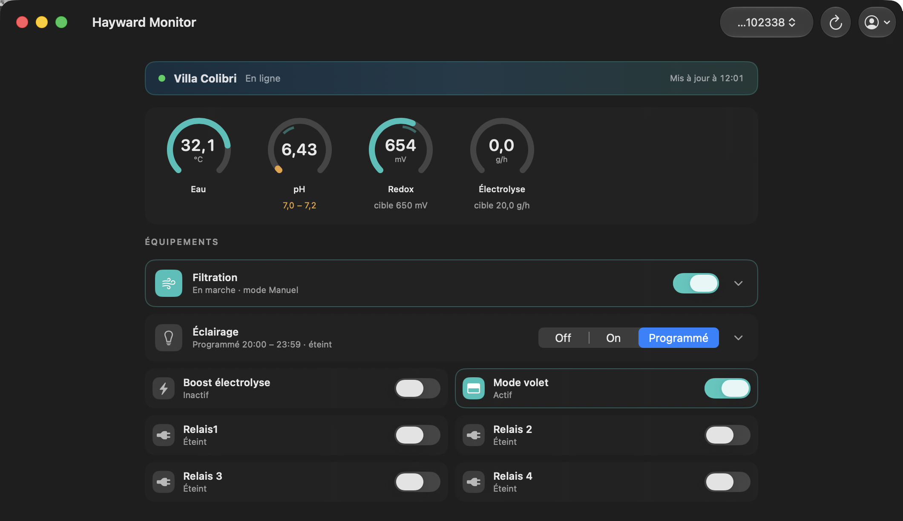

23Hayward Monitor
Native macOS app for Hayward AquaRite / Sugar Valley NeoPoolApp macOS native pour Hayward AquaRite / Sugar Valley NeoPool适用于 Hayward AquaRite / Sugar Valley NeoPool 的原生 macOS 应用
Your pool, from your Mac.
Native. Signed. Auto-updating.Votre piscine, depuis votre Mac.
Natif. Signé. Auto-mis à jour.在 Mac 上掌控您的泳池。
原生、已签名、自动更新。
Hayward Monitor is a native macOS app for Hayward AquaRite / Sugar Valley NeoPool systems — the pools driven by the PoolWatch and Vistapool iPhone apps. Dashboard, controls and setpoints, right on your desktop.Hayward Monitor est une app macOS native pour les systèmes Hayward AquaRite / Sugar Valley NeoPool — les piscines pilotées par les apps iPhone PoolWatch et Vistapool. Tableau de bord, commandes et consignes, directement sur votre bureau.Hayward Monitor 是一款原生 macOS 应用，适用于 Hayward AquaRite / Sugar Valley NeoPool 系统（即 PoolWatch 和 Vistapool iPhone 应用所控制的泳池）。仪表盘、控制与设定值，尽在您的桌面。
- RequiresConfiguration系统要求
- macOS 14+
- DistributionDistribution发行
- Developer ID signed & notarizedSignée Developer ID & notariéeDeveloper ID 签名并经公证
- UpdatesMises à jour更新
- Sparkle 2 updatesMises à jour Sparkle 2Sparkle 2 更新
- LicenceLicence许可证
- MIT licenseLicence MITMIT 许可证

Live dashboardTableau de bord en direct实时仪表盘
Water temperature, pH, redox, chlorine, electrolysis output and WiFi signal — refreshed every 30 seconds.Température de l'eau, pH, redox, chlore, production d'électrolyse et signal WiFi — rafraîchis toutes les 30 secondes.水温、pH、氧化还原电位、氯、电解产量与 WiFi 信号——每 30 秒刷新。
Full controlContrôle complet全面控制
Filtration and pump modes, pool light with scheduling, electrolysis boost, cover mode, four aux relays.Filtration et modes pompe, éclairage avec programmation, boost électrolyse, mode volet, quatre relais auxiliaires.过滤与水泵模式、可编程照明、电解增强、泳池盖模式、四路辅助继电器。
SetpointsConsignes设定值
pH min/max, redox target and electrolysis production, applied explicitly — no accidental changes.pH min/max, cible redox et production d'électrolyse, appliquées explicitement — pas de changement accidentel.pH 上下限、氧化还原目标与电解产量，需显式应用——避免误操作。
Private by designPrivé par conception隐私优先
Your PoolWatch credentials live in the macOS Keychain. Sandboxed app, HTTPS only, no analytics, open source.Vos identifiants PoolWatch restent dans le Trousseau macOS. App sandboxée, HTTPS uniquement, zéro télémétrie, open source.您的 PoolWatch 凭据保存在 macOS 钥匙串中。沙盒应用、仅 HTTPS、无遥测、开源。
One-click updatesMises à jour en un clic一键更新
Sparkle 2 + notarized DMGs + EdDSA signatures — Check for Updates… downloads, swaps and relaunches.Sparkle 2 + DMG notariés + signatures EdDSA — Rechercher les mises à jour… télécharge, remplace et relance.Sparkle 2 + 已公证 DMG + EdDSA 签名——检查更新即可下载、替换并重启。
No SDK, pure RESTPas de SDK, REST pur无 SDK，纯 REST
Talks to the same Hayward cloud as the official apps through three documented endpoints. Nothing else.Parle au même cloud Hayward que les apps officielles via trois endpoints documentés. Rien d'autre.通过三个已记录的端点与官方应用相同的 Hayward 云通信,仅此而已。
Installed in a minuteInstallée en une minute一分钟完成安装
Download. Grab the latest signed .dmg from GitHub Releases and mount it.Télécharger. Récupérez le dernier .dmg signé depuis GitHub Releases et montez-le.下载。从 GitHub Releases 获取最新签名的 .dmg 并挂载。
Drag & drop. Drop Hayward Monitor into /Applications. Gatekeeper accepts it — notarized by Apple.Glisser-déposer. Déposez Hayward Monitor dans /Applications. Gatekeeper l'accepte — notariée par Apple.拖放。将 Hayward Monitor 拖入 /Applications。已经 Apple 公证，Gatekeeper 直接放行。
Sign in. Use your PoolWatch / Vistapool account. Your pool appears; you're in control.Connexion. Utilisez votre compte PoolWatch / Vistapool. Votre piscine apparaît ; vous avez la main.登录。使用您的 PoolWatch / Vistapool 账户登录，泳池即刻呈现，尽在掌控。
Your pool, from your Mac.Votre piscine, depuis votre Mac.在 Mac 上掌控您的泳池。
macOS 14+ · Developer ID signed & notarized · Sparkle 2 updates · MIT licensemacOS 14+ · Signée Developer ID & notariée · Mises à jour Sparkle 2 · Licence MITmacOS 14+ · Developer ID 签名并经公证 · Sparkle 2 更新 · MIT 许可证